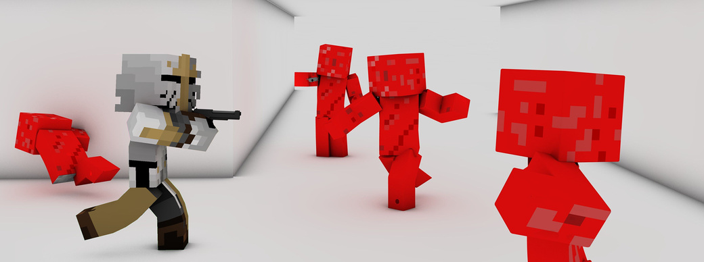

トライアル「Trial」

Trialは、ゲームで使われるアリーナを練習場とし、ウェポンの試用や射撃練習を行えるシステムです。
手持ちのレコードで任意の地点にボットを出現させることも可能で、偏差撃ちの練習もできるようになります。
トライアル限定の要素
・全てのウェポンを試しに使えます。
・プレイヤーの鎧は壊れません。
・矢の着弾地点に青い波紋のエフェクトが出現します。
ボットについて
レコードを用いて出現させるボットは、出現後にレコードを使うことで設定ができます。
| 項目 | 説明 |
|---|---|
| 動き | 直立不動にするか、動くようにするか |
| 衝突時方向転換 | 壁に向かっているとき、自動的に方向転換するか |
| ランダム方向転換 | ランダムなタイミングで、方向転換するか |
| 段差をジャンプ | 段差を超える動きをするかどうか |
| 移動中のジャンプ | 任意のタイミングで移動中にジャンプをするか |
| 空中ジャンプ | 空中でジャンプをするか |
| 一度に移動しつづける時間 | 直進の継続時間 (1秒: 20) |
| 一度に静止しつづける時間 | 移動後、停止しつづける時間 (1秒: 20) |
| 移動中ジャンプの間隔 | ジャンプの間隔 (1秒: 20) |
| ジャンプ時のY軸倍率 | ジャンプの上方向倍率 |
| 移動時のXZ軸倍率 | 移動中の横方向速度倍率 |
| ジャンプ時のXZ軸倍率 | ジャンプしたときの横方向速度倍率 |